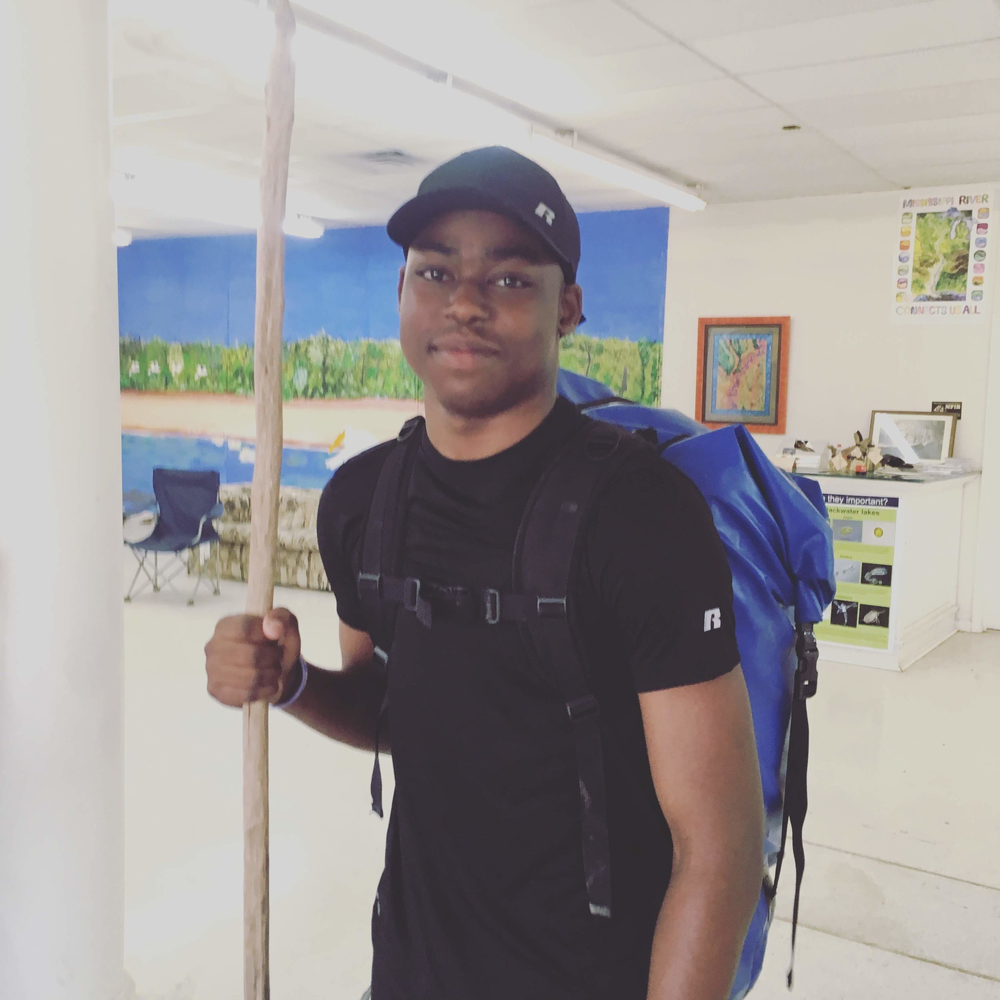
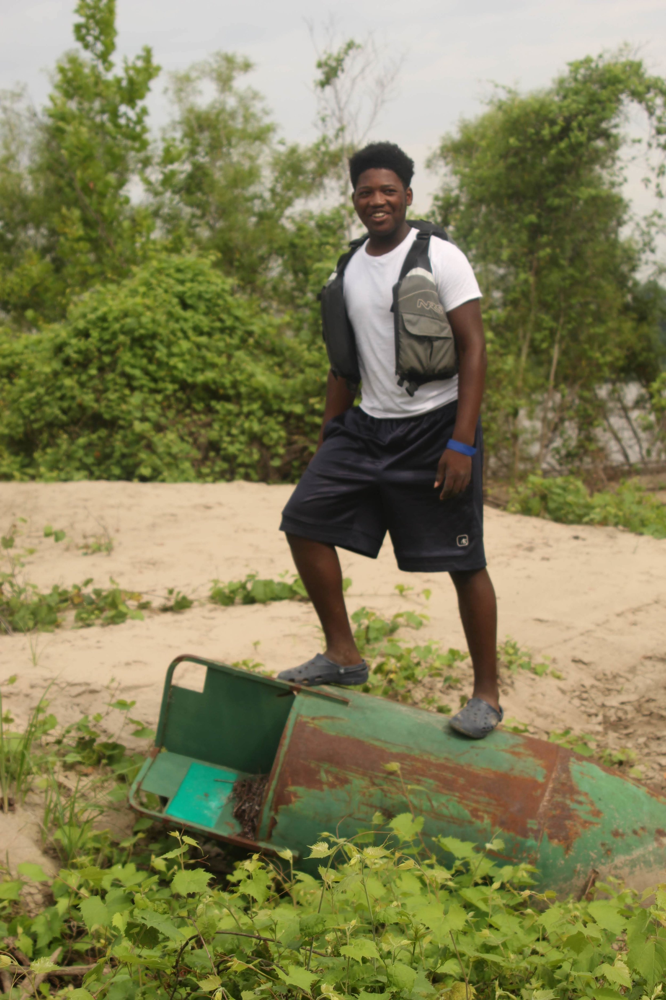
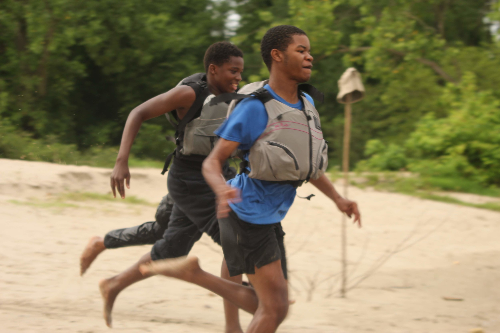
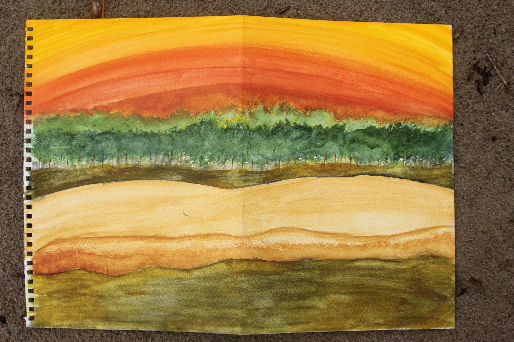
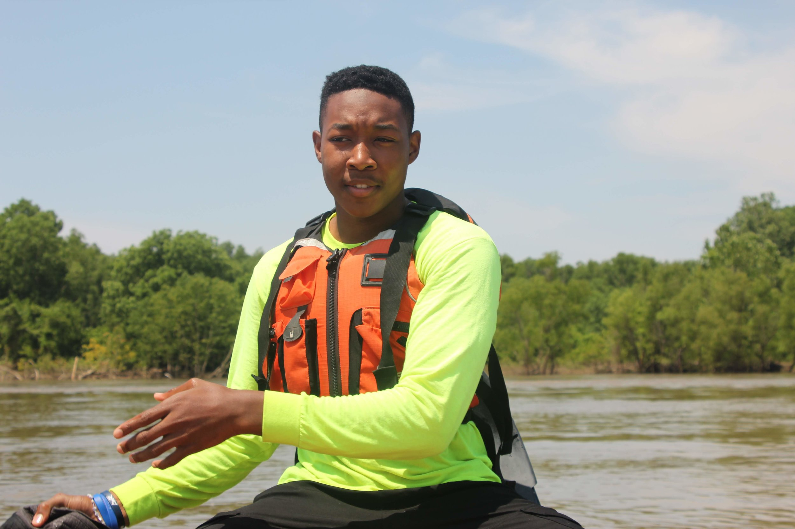
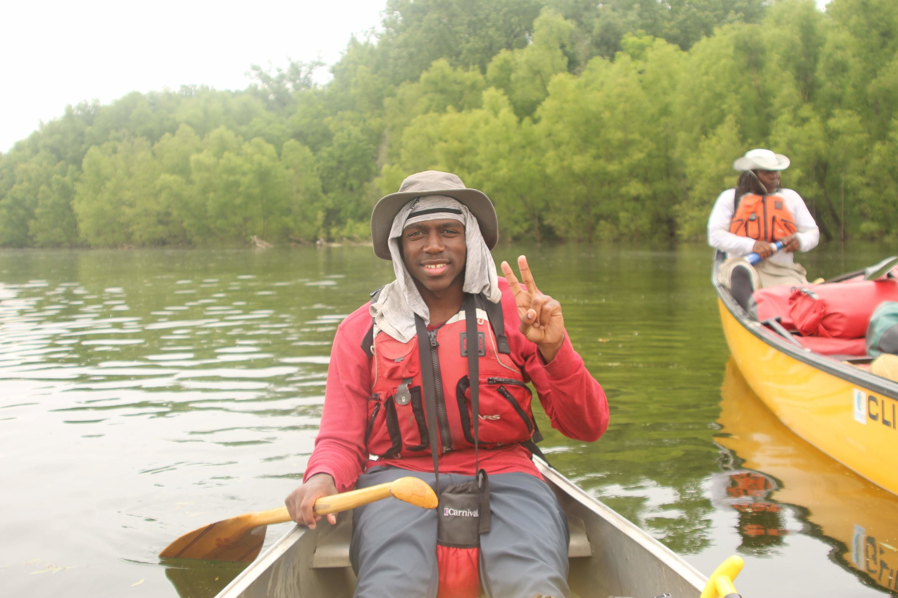
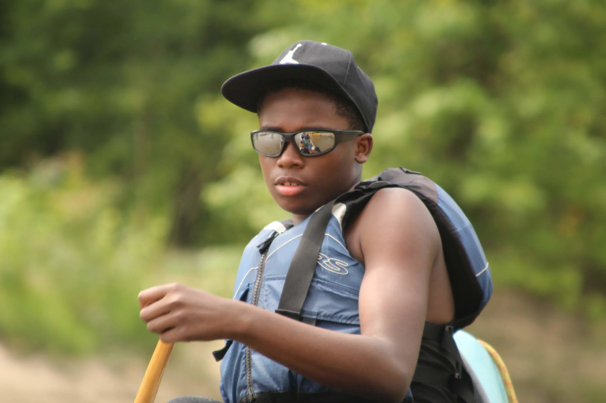
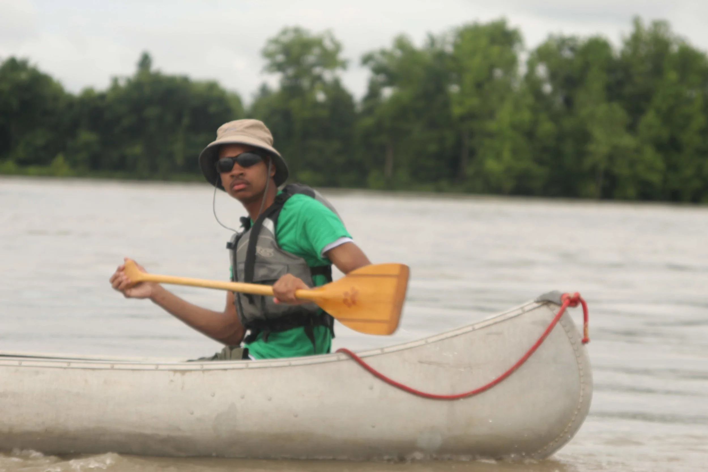

This year's crew on the Mississippi River Summer Leadership Camp named themselves the Disciples because they learned to spread the good word of the river. We were lucky to spend a week with this amazing group of students.
Each of them is giving a river name through the course of the week that matches who they are on the water which is often not the same person they are on land.

Lone Wolf earned his name last year because he always follows his own heart and mind, not what the crowd is doing. He came back this year as an even stronger leader. He was always the first person to help with setting up camp or cooking dinner without needing to be asked and he help motivate his teammates when they were struggling. He is joining the Marines in a few weeks where we have no doubt his leadership skills will serve him well!

A new recruit this year, Dreamy Bear earned his name because he would go into hibernation any time he was given the chance. As soon as he was needed he would spring right to work. He never missed a paddle stroke or skipped a chore but if there was a moment of down time he would fall asleep in any position. Bear didn't talk much over the week but by the last night he began to open up and share what was going on behind that dreamy gaze.

Not all leaders are loud and charismatic. There's great power in quiet leaders who observe and lead by example. That was Quiet Thunder. He came on this trip to test himself and push his boundaries so he never missed an opportunity to try something new, even if it was scary. He was the first new recruit to try steering the small boats and kept a clear head when big waves from a barge hit them. He is an amazing artist and I'm sure we will see great things from him in the future.

River Gar earned his name last year when he went swimming with a school of gar fish. Never lacking in courage, River Gar still had a lot to learn about teamwork last year. He was the first student to sign up for this year's trip, determined to continue to improve himself. It was amazing to see his growth from last year to this year as an artist, a leader and a teammate.

Cypress are hard to knock down, they stand tall and sturdy during floods and droughts. Cypress earned his name by being the same way this year. He was always steady, constant and reliable. He was also always trying to improve himself. He always asked for extra time steering the small boats because he wanted to improve. It takes courage and determination to continue to practice something when you aren't automatically good at it. By Day 4 he was carving a mean line down the river!

Water fights are pretty common in the canoes on hot days. Sly Fox earned his name by being the best at attacking his enemy when they least expected it. Besides being an all-star water fighter he also stepped up and set the pace in his boat. On his first day on the water he really struggled to keep up with the pace but by the end he was setting a pace that we could hardly match!

Last year we named him Quiet Coyote because he barely spoke. This year he came back confident and ready to show off his leadership. He really showed off his river knowledge this year as well as his goofy personality. After he successfully steered the small boat across the main channel of the river we renamed him Captain Coyote!

Don't Forget the Crew! They worked around the clock to make this happen. Without them there would not have been a trip! Not pictured: Driftwood Johnny who had to hop off early to go accept his Lifetime Achievement Award.